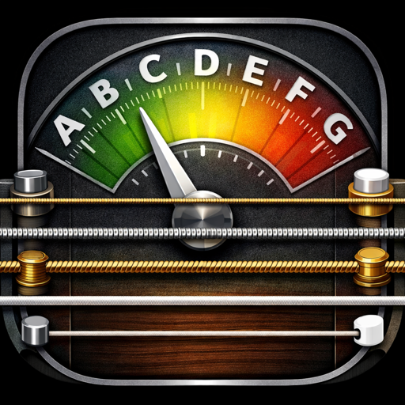

Clear guidance
See the detected note, frequency, cents offset, signal level, and a centered tuning indicator in one view.
A private instrument tuner
Tune guitar, bass, ukulele, or any sustained note with a focused display and responsive on-device pitch detection.

See the detected note, frequency, cents offset, signal level, and a centered tuning indicator in one view.
Choose standard guitar, 4-string bass, high-G ukulele G4–C4–E4–A4, or the chromatic tuner.
Microphone audio is analyzed on your iPhone. It is not recorded, saved, uploaded, or shared.
Türkçe
TuneString; gitar, dört telli bas, standart yüksek Sol ukulele ve herhangi bir sabit nota için cihaz üzerinde çalışan bir akort uygulamasıdır. Mikrofon sesi kaydedilmez, saklanmaz veya yüklenmez.